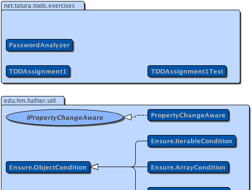

|
|||||||||
| PREV NEXT | FRAMES NO FRAMES | ||||||||
| Packages | |
|---|---|
| edu.hm.hafner.util | Provides highly reusable utility classes and static methods, chiefly concerned with adding value to java.lang and other standard core classes. |
| net.tatura.tools.exercises | |
|  |
|
|||||||||
| PREV NEXT | FRAMES NO FRAMES | ||||||||